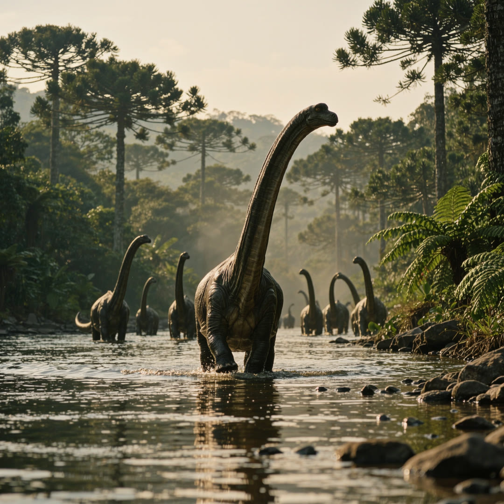
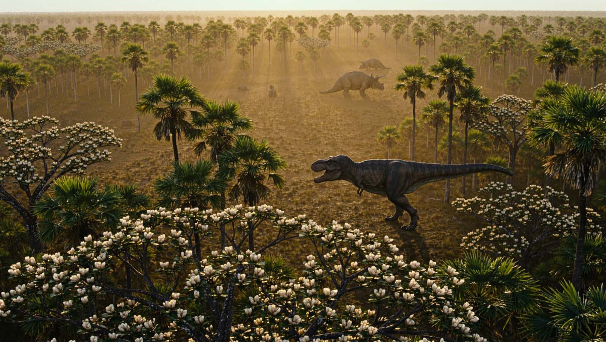

Walk through deep time.
Dinosaurs ruled the land for more than 160 million years. This is the long road from a small runner in a Triassic desert to the morning the sky caught fire.
252 million years ago, the world has just survived its worst extinction.
One continent. Mostly desert.
Around 230 million years ago, something small stands up on two legs.
It is a metre long. Nothing is afraid of it yet.

Then they got enormous.
Another extinction at the end of the Triassic cleared the field. Pangaea began to split, the climate turned warm and wet, and conifer forests spread across the land.
Sauropods like Brachiosaurus grew past twenty metres long and held their heads high above the treetops, while plated Stegosaurus grazed the ferns below.
The last forests.

Flowering plants spread across every continent. Many small theropods wore feathers. For the final few million years, Tyrannosaurus and Triceratops shared the same floodplains of western North America.
The sky caught fire.
A rock about ten kilometres across struck what is now the Yucatán Peninsula, at roughly twenty kilometres per second.
Molten debris rained around the planet. Soot and dust blocked the sun for years, and photosynthesis almost stopped.
About three quarters of all species vanished. Every dinosaur that could not fly went with them.
Some of them had feathers.
In the dark years, small feathered dinosaurs that could live on seeds made it through. Ferns were the first plants to cover the ash.
Feathers were nothing new. This piece of amber holds a feathered dinosaur tail, trapped 99 million years ago.
They never left.
Birds are living dinosaurs, the last branch of the theropods. The three-toed track you've been leaving across this page is still made every morning, by a pigeon.
Walk it again